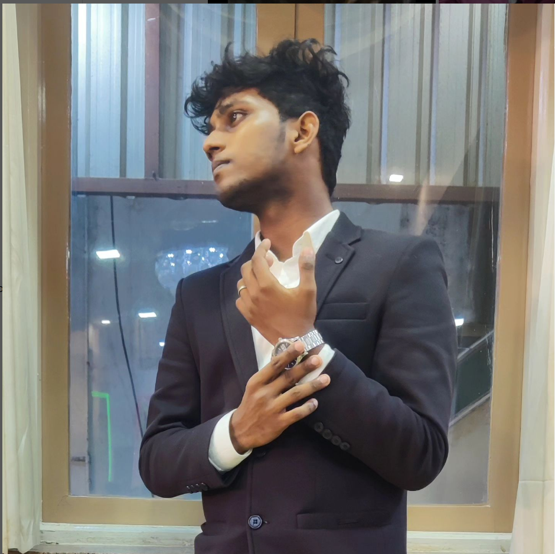

Elavarasan V

Career Objective:
To enhance my working capacities, professional skills, business efficiencies and to serve my organization
in best possible way with sheer determination and commitment
Academic Qualification:
- Pursue B.Sc Computer Science with 7.49 cgpa (2019) from Dwaraka Doss Goverdhan Doss
Vaishnav College, Chennai.
- Higher Secondary School(12th) from St.Mary’s Matriculation higher secondary school in the year
2019 with 68.50%
- High School(10th) from St.Mary’s Matriculation higher secondary school in the year 2017 with
87%
Skills
- TYPEWRITING English senior
- TYPEWRITING Tamil junior
- Javascript
- Html
- Css
Awards and Certifications
- Gained a front-end certificate in freeCodeCamp
- Runner in live Photography at mgr college
- Finished typewriting in Distinction